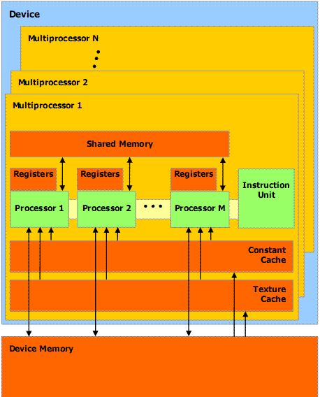
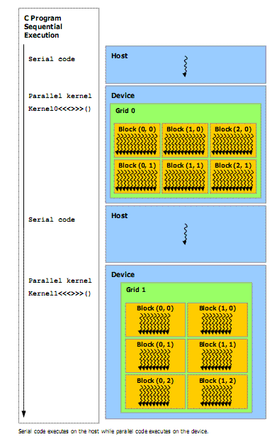
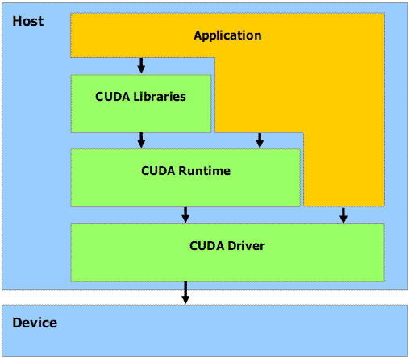
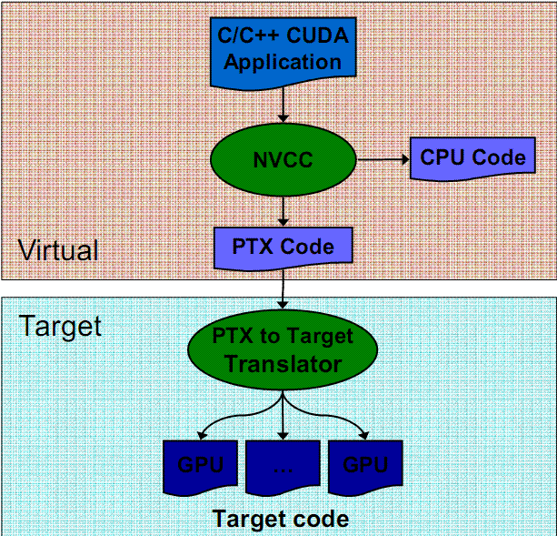

hyPACK-2013 Mode-2 : GPU Computing ; CUDA enabled NVIDIA GPU
NVIDIA's
Compute Unified Device Architecture (CUDA) is a software platform for massively parallel high-performance
computing on the company's powerful GPUs. NVIDIA's software CUDA programming model effectively use GPUs which could be harnessed for tasks other than
graphics, achieving teraflops of computing power. For high performance computing, the programming model has
been designed to improve the shaders, which is commonly used in terminology in Graphics Computing and shaders
are called as stream processing or thread processing.
|
List of Programs CUDA enabled NVIDIA GPUs
|
Module 1 :
|
Getting Started : CUDA enabled NVIDIA GPU Programs)
|
|
Module 2 :
|
Getting Started : PGI OpenACC APIs on CUDA enabled NVIDIA GPU)
|
|
Module 3 :
|
CUDA enabled NVIDIA GPU Programs on Numerical Computations (Dense Matrix Computations)
|
|
Module 4 :
|
CUDA enabled NVIDIA GPU Programs using BLAS libraries for Matrix Computations
|
|
Module 5 :
|
CUDA enabled NVIDIA GPU Programs - Application Kernels
|
|
Module 6 :
|
CUDA enabled NVIDIA GPU Memory Optimization Programs - Tuning & Performance
|
|
Module 7 :
|
CUDA enabled NVIDIA GPU Streams : Concurrent Ashynchronous Execution
|

|
CUDA Programming model automatically manages the threads and it is significantly differs from single
threaded CPU code and to some extent even the parallel code. Efficient CUDA programs exploit both
thread parallelism within a thread block and coarser block parallelism across thread blocks. Because only
threads within the same block can cooperate via shared memory and thread synchronization, programmers
must partition computation into multiple blocks.
|
|
GPGPU Computing
|
|
In the recent past, the computational power
of GPUs has widely attracted the scientific community and GPUs provide unprecedented computational power
to solve the data intensive applications. A graphical Processing Unit (GPU) is specifically designed to
be extremely fast at processing; large graphics data sets (e.g., polygons and pixels) for rendering tasks.
To-day's the best GPUs can execute multiple billion floating point operations per second more than
10 to 20 times the performance of fastest dual core processors. To-day's GPUs' and game-oriented CPUs
are highly optimized for single-precision (32-bit) floating point operations than double precision
(64-bit operations). Most widely used community has been confined to video game since long time.
The challenge is to develop application software that
transparently scales its parallelism to leverage the increasing number of processor
cores, much as 3D graphics applications transparently scale their parallelism to
manycore GPUs with widely varying numbers of cores.
The GPU is viewed as a compute device capable of executing a very
high number of threads in parallel.
It operates as a co-processor to the main CPU called host. Data-parallel, compute intensive portions of
applications running on the host are transferred to the device by using a function that is executed on
the device as many different threads. Both the host and the device maintain their own DRAM, referred to
as host memory and device memory, respectively.
The programmable GPU has evolved into a highly parallel, multi-threaded, many-core
devices and these are driven by real-time, high-definition 3D graphics. The floating-point
capability between the CPU and the GPU is changing fast and GPU is specialized for
compute-intensive, highly parallel. GPU is especially well-suited to address problems
that can be expressed as data-parallel computations - the same program is executed on
many data elements in parallel - with high arithmetic intensity - the ratio of arithmetic
operations to memory operations. Due to this, the memory access latency can be hidden with
calculations instead of big data caches.
GPGPU : In the recent years, much attention has been gained for general purpose CPU (GPGPU)
processing. The word "general purpose" in the context of High Performance Computing (HPC) usually means
"data intensive applications in scientific and engineering fields. In GPGPU (Graphics) Processing,
the graphics performance of specialized software, e.g. scientific software, image manipulation,
video decoders/encoders, games that make GPU performance pretty important.
In GPGPU programming techniques, programmers can use GPU's pixel shavers as general-purpose single
precision FPUs, For typical Video applications, GPGPU processing is highly parallel, but it relies on
the size of off-chip video memory to operate on large data sets. Off-chip memory on GPGPUs plays an
important role for GPGPU applications in which different threads must interact each other through off
chip memory. From graphics point of view, the video memory, normally used for texture maps and so forth
in graphics applications, may store any kind of data in GPGPU applications.
Also, the performance of
Graphics (GPGPU) bandwidth i.e. the bandwidth of the memory of the graphics processors (GPGPUs)
and the bandwidth of the bus that connects them to your computer
pan an important role to speed up the computations.
The speed at which the data can be
sent to the GPGPUs, internally processed and the results sent back is as important as the processing
power of the GPGPUs. Also, the performance of Video (GFX) Rendering in which how efficiently graphics
processors can handle rendering. Such operations are used by all graphics software, image manipulation,
video decoders/encoders, games and modern operating systems. Video (GFX) Memory is crucial for performance
and the bandwidth of the memory of the video adapters (GFXs) and the bandwidth of the bus that connects
them to your computer drive the performance.
|
|
NVIDIA GPU CUDA
|
|
The NVIDIA CUDA technology is a fundamentally new computing architecture that enables the GPU to solve complex
computational problems. CUDA technology gives computationally intensive applications access to the processing
power of NVIDIA graphics processing units (GPUs) through a new, programming interface. Software development is
strongly simplified by using the standard C language. NVIDIA's compute Unified Device Architecture (CUDA) is
a software platform for massively parallel high-performance computing on the NVIDIA's powerful GPUs. The game
community has been using the NVIDIA's GPUs and graphics cards since long time and at present the graphics market
is changing very fast. NVIDIA's GeForce, Quadrobrand and Tesla brand products are steadily winning customers
in scientific and engineering fields.
Even though GeForce and Quadro brand products has been used for traditional consumer graphics market but the
Tesla and Fermi is intended for high-performance computing.
CUDA : NVIDIA's compute Unified Device Architecture (CUDA) is a software platform for massively parallel
high-performance computing on the NVIDIA's powerful GPUs.
NVIDIA's software CUDA programming model effectively use GPUs which could be harnessed for tasks other than
graphics, achieving teraflops of computing power. For high performance computing, the programming model has
been designed to improve the shade rs, which is commonly used in terminology in Graphics Computing and shaders
are called as "stream processing" or " thread processing". Each thread processor in an NVIDIA GeForce 8-Series
GPU can manage 96 concurrent threads, and these processors have their own FPUs, registers and shared local
memory.
CUDA requires programmers to write special code for parallel processing but it doesn't require them
to explicitly manage threads, which simplifies the programming model. CUDA includes C/C++ Software development
tools, functions libraries and a hardware abstraction mechanism that hides the GPU hardware from developers.
CUDA provides solution for such applications and NVIDIA's new GPU
which supports double precision floating point mathematical operations can address broader class of applications.
NVIDIA simplifies the programming model in which
the burden of managing the threads is removed. This is an important features of CUDA in which
application programmers don't write the explicit threaded code. A hardware thread manager handles
the threading automatically. Automatic thread management is vital when multi-threading scales to
thousands of threads. NVIDIA's card can manage as many as concurrent threads (more than 10,000
for Ge-Force 8 GPUs) and these are lightweight threads in the sense that each thread can operates
on small piece of data, they are fully fledged threads in the conventional sense. That is each
thread has its own stack, register file, program counter, and local memory. The GPU handles the
state of active and inactive threads and the complete run-time thread management is transparent
to the programmer. This also helps to programmer to eliminate the potential bugs in the application.
The G8G-chip on a NVIDIA 8800 Ultra graphics card has 16 multiprocessors with 8 processors each, for a total
of 128 processors. These are generalized floating-point processors capable of operating on &-,16- and 32-bit
integer types, and 16- and 32-bit floating point types. Each multiprocessor has a memory of 16 KB size that
is shared by the processors within the multiprocessor. Access to a location in this shared memory has a latency
of only 2 clock cycles allowing fast nonlocal operations. The processors are clocked (Shader Clock) at 1.6GHz,
giving the GeForce 8800 Ultra a tremendous amount of floating-point processing power. Each multiprocessor has
a Single Instruction, Multiple Data architecture (SIMD).
|
|
CUDA Prog.
|
|
CUDA is a parallel programming model and software environment designed to
overcome this challenge while maintaining a low learning curve for programmers
familiar with standard programming languages such as C.
At its core are three key abstractions - a hierarchy of thread groups, shared
memories, and barrier synchronization - that are simply exposed to the programmer
as a minimal set of extensions to C.
These abstractions provide fine-grained data parallelism and thread parallelism,
nested within coarse-grained data parallelism and task parallelism. They guide the
programmer to partition the problem into coarse sub-problems that can be solved
independently in parallel, and then into finer pieces that can be solved cooperatively
in parallel. Such a decomposition preserves language expressibility by allowing
threads to cooperate when solving each sub-problem, and at the same time enables
transparent scalability since each sub-problem can be scheduled to be solved on any
of the available processor cores: A compiled CUDA program can therefore execute
on any number of processor cores, and only the runtime system needs to know the
physical processor count.
CUDA Programming model automatically manages the threads and it is significantly differs from
single threaded CPU code and to some extent even the parallel code. Before availability of
NVIDIA's CUDA, some of the users in Parallel Processing Community write codes for GPU.
The CUDA model is highly parallel as GPGPU model. The approach is to divide the data set into smaller
chunks stored in on-chip memory then allows multiple thread processors to share each chunk. Storing
the data locally reduces the need to access off-chip memory, thereby improving the performance.
Design class of applications that avoid access to off-chip memory in Scientific Computing requires
to re-write the application or re-design algorithm. Also, the overheads involved while loading the
required off-chip data into local memory, may affect the performance. CUDA handles in an intelligent
way in which off-chip memory access usually doesn't stall a thread processor and another thread is
ready to execute. In CUDA, a group of threads work together in round-robin fashion, ensuring that
each thread gets execution time without delaying other threads, thereby reducing the thread overheads.
The wait for remote access and service strongly factors into a CUDA's efficiency and scaling.
CUDA eliminates the deadlocks, irrespective of number of threads running and it
supports special APIs to address, barrier synchronization.
A thread block is a batch of threads that can cooperate together by efficiently sharing data through some
-fast shared memory and synchronizing their execution to coordinate memory accesses by specifying
synchronization points in the kernel. Its thread ID identifies each thread, which is the thread
number within the block. An application can also specify a block as a three-dimensional array and
identify each thread using a 3-component index.
CUDA - Data Decomposition Analyze the Data : It is responsibility of developers to analyze their
problem to determine how
best to divide the data into smaller chunks for distribution among the thread processors. This
decomposition" does require programmers to re-think about the array sizes and their access pattern.
If the contents of array are too large for the CPU's caches, the program must frequently
access off-chip memory, severely impending performance.
In CUDA, a block of these threads can run on a cluster of thread processors and operate on the
same data (the packet) in shared memory. If much or all the data fits in local memory, the
program needn't access off-chip memory. If a thread does need to access off-chip memory, the
stalled thread enters the inactive queue and yields to another thread. This process continues
until all threads in the block have scanned the packet. Meanwhile, other blocks of threads
are simultaneously doing the same thing while running on other clusters of thread processors.
To get performance for applications, one of the challenges is to analyze the algorithm and find the
optimal numbers of threads and blocks that will keep the GPU fully utilized. For full utilization,
the factors include the size of the global data set, the maximum amount of local data that blocks
of threads can share, the number of thread processors in the GPU, and the sizes of the on-chip
local memories. The limit on the number of concurrent threads and the number of registers for
each thread play a key role for performance. The CUDA compiler automatically determines the
optimal number of registers for each thread. Achieving the practical degree of concurrency is based
on the how the complier technology assigns registers per thread.
CUDA development tools may address the difficulties to choose the data layout and the algorithms overheads.
NVIDIA's CUDA GPU Computing provides a direct, general-purpose C language interface to the programmable
processors on NVIDIA's 8-series GPUs, eliminating much of the complexity of writing GPGPU applications
using graphics APIs such as OpenGL. Furthermore, CUDA exposes some important new hardware features that
have large benefits to the performance of data-parallel computations:
/p>
-
General Load-Store Architecture : CUDA allows arbitrary gather and scatter memory access from GPU programs.
-
On-chip Shared Memory : Each multiprocessor on the GPU contains a fast on-chip memory
(16KB on NVIDIA 8-series GPUs). All threads running on a multiprocessor can load and store data from
the memory.
-
Thread Synchronization : A barrier instruction is provided to synchronize between all threads active on
a GPU multiprocessor. Together with shared memory, this feature allows threads to cooperatively
compute results.
NVIDIA's 8-series GPUs feature multiple physical multi-processors, each with a shared memory and
multiple scalar processors (for example, the NVIDIA GeForce 8800 GTX has 16 multiprocessors with eight
processors each). CUDA structures GPU programs into parallel thread blocks of up to 512 SIMD-parallel
threads. Programmers specify the number of thread blocks and threads per block, and the hardware and drivers
map thread blocks to parallel multiprocessors on the GPU. Within a thread block, threads can communicate
through shared memory and cooperate by combining shared memory with thread synchronization.
Efficient CUDA programs exploit both thread parallelism within a thread block and coarser block parallelism
across thread blocks. Because only threads within the same block can cooperate via shared memory and thread
synchronization, programmers must partition computation into multiple blocks.
|
|
CUDA Kernel
|
|
CUDA extends C by allowing the programmer to define C functions, called kernels,
that, when called, are executed mn times in parallel by n different CUDA threads, as
opposed to only once like regular C functions.
A kernel is defined using the
__global__
declaration specifier and the number of CUDA threads for each call is specified using
a new <<<...> >> syntax:
//Kernel defintition
_global_void vecAdd(float*A, float* B, float*C)
{
...........;
}
int main()
{
// Kernel invocation
vecAdd<<<1, N>>> (A,B,C);
}
Figure Kernel Definition.
Each of the threads that execute a kernel is given a unique thread ID that is
accessible within the kernel through the built-in threadIdx variable. As an
illustration, the above sample code adds two vectors A and B of size N and
stores the result into vector C
|
|
CUDA Memory Layout
|
|
CUDA threads may access data from multiple memory spaces during their
execution. Each thread has a private local memory. Each
thread block has a shared memory visible to all threads of the block and with the
same lifetime as the block. Finally, all threads have access to the same global
memory.
There are also two additional read-only memory spaces accessible by all threads: the
constant and texture memory spaces. The global, constant, and texture memory
spaces are optimized for different memory usages.
Texture memory also offers different addressing modes, as well as data
filtering, for some specific data formats .
The global, constant, and texture memory spaces are persistent across kernel
launches by the same application.

Figure 2. CUDA memory layout Model
Host and Device
CUDA assumes that the CUDA threads may execute
on a physically separate device that operates as a co-processor to the host running the C
program. This is the case, for example, when the kernels execute on a GPU and the
rest of the C program executes on a CPU.
CUDA also assumes that both the host and the device maintain their own DRAM,
referred to as host memory and device memory, respectively. Therefore, a program
manages the global, constant, and texture memory spaces visible to kernels through
calls to the CUDA runtime (described in Chapter 4). This includes device memory
allocation and deallocation, as well as data transfer between host and device
memory.

Figure 3. CUDA : Heterogeneous Programming
CUDA Software Stack
The CUDA software stack is composed of several layers as illustrated in following figure
a device driver, an application programming interface (API) and its runtime, and
two higher-level mathematical libraries of common usage, CUFFT and CUBLAS
that are both described in separate documents.

Figure 4. CUDA : Software Stack
|
|
CUDA : Application Programming Interface (API)
|
|
The goal of the CUDA programming interface is to provide a relatively simple path for users familiar with
the C programming language to easily write programs for execution by the device. It consist of :
- A minimal set of extensions to the C language, that allow the programmer to target portions
of the source code for execution on the device;
- A runtime library split into :
- A host component that runs on the host and provides functions to control and access one or more compute devices from host;
- A device component, that runs on the device and provides device-specific functions;
- A common component, that provides built-in vector typed and a subset of the C standard library
that are supported in both host and device code.
Function Type Qualifier:
1. __device__ :
The __device__ qualifier declares a function that is:
- Executed on the device.
- Callable from the device only.
2. __global__ :
The __global__ qualifier declares a function that is:
- Executed on the device.
- Callable from the host only.
3. __host__ :
The __host__ qualifier declares a function that is:
- Executed on the host.
- Callable from the host only.
It is equivalent to declare a function with only the __host__ qualifier or to declare it without
any
of the &nbap; __host__, __device__, or __global__ qualifier; in
either case the function is compiled for the host only.
However, the __host__ qualifier can also be used in combination with
the __device__ qualifier, in which case the
function is compiled for both the host and the device.
Variable Type Qualifier:
1. __device__ :
The __device__ qualifier declares a variable that resides on the device.
At most one of the other type qualifiers defined in the next three sections may be used together with __device__
to further specify which memory space the variable belongs to. If none of them is present, the variable:
- global memory space
- Has the lifetime of an application.
- Is only accessible from all the threads within the grid and from the host through the runtime library.
2. __constant__ :
The __constant__ qualifier optionally used together with __device__, declares a variable that:
- Resides in constant memory space.
- Has the lifetime of an application.
- Is only accessible from all the threads within the grid and from the host through the runtime library.
3. __shared__ :
The __shared__ qualifier optionally used together with __device__, declares a variable that:
- Resides in shared memory space of thread block.
- Has the lifetime of an block.
- Is only accessible from all the threads within block.
Built-in Variables
1. gridDim :
This variable is of type dim3 and contains the dimensions of the grid.
2. blockIdx :
This variable is of type uint3 and contains the block index within the grid.
3. blockDim :
This variable is of type dim3 and contains the dimensions of the block.
4. threadIdx :
This variable is of type uint3 and contains the thread index within the block.
5. warpSize :
This variable is of type int and contains the warp size in threads.
|
|
CUDA API used:
cudaMalloc(void** array, int size)
// allocates memory on device
cudaFree(void* array )
// frees memory allocated on device
cudaMemcpy((void*)device_array, (void*)host_array, size , cudaMemcpyHostToDevice )
// copies from host to device
cudaMemcpy((void*)host_array, (void*)device_array, size , cudaMemcpyDeviceToHost )
// copies from device to host
CUDPP API used:
cudppSparseMatrix(&sparseMatrixHandle, config, no_of_non_zero, no_of_rows, (void *) matrix, (unsigned int *) row_ptr, (unsigned int *)col_idx);
//this fucntion creates a sparse matrix object assigned to the sparseMatrixHandle.
cudppSparseMatrixVectorMultiply(sparseMatrixHandle, result, vector);
// performs the multiplication
|
|
CUDA Compilation, Linking and Execution of Program
|
For Compilation of CUDA program, additional steps are involved, partly because the program targets
two different processor architectures (the GPU and a host CPU), and partly because of CUDA's hardware
abstraction. Compiling a CUDA program is not as straightforward as running a C compiler to convert
source code into executable object code. The same source file mixes C/C++ code written for both the
GPU and the CPU, and special extensions and declarations identify the GPU code. The first step
is to separate the source code for each target architecture.
nvcc is a compiler driver that simplifies the process of compiling CUDA code: It
provides simple and familiar command line options and executes them by invoking
the collection of tools that implement the different compilation stages.
nvcc's basic work flow consists in separating device code from host code and
compiling the device code into a binary form or cubin object. The generated host
code is output either as C code that is left to be compiled using another tool or as
object code directly by invoking the host compiler during the last compilation stage.

Figure 5. CUDA : Source Code Compilation Stages.
CUDA code should include the cuda.h header file. On the compilation
command line, the cuda library should be specified to the linker on UNIX
and Linux environments. Two steps are explained below.
1. Using command line arguments to compile CUDA source code:
The compilation and execution details of CUDA programs is simple as like compilation of C language source code.
$ nvcc -o < executable name > < name of source file >
For example to compile a simple Hello World program user can give :
$ nvcc -o helloworld cuda-helloworld.cu
Executing a Program:
To execute a CUDA Program, give the name of the executable at command prompt.
$ . / < Name of the Executable >
For example, to execute a simple HelloWorld Program, user must type:
$ ./helloworld
The output must look similar to the following:
Hello World!
|
|
CUDA Tool Kit 4.0 for Applications
|
|
CUDA Multi-GPU Programming :
CUDA Programming model provides two basic approaches available to execute CUDA kernels on multiple GPUs (CUDA "devices") concurrently from a single host application:
-
Use one host thread per device, since any given host thread can call cudaSetDevice() at most one time.
- Use the push/pop context functions provided by the CUDA Driver API.
Applications that require tight coupling of the various CUDA devices within a sytem, these approaches may
not be sufficent due to sychronization or communication with each other. The CUDA Runtime now provides features
in which single hos thread could easily launch work onto any devices it needed. To acommplish this, a host
thread can call
cudaSetDevice()
at any time to change the currently active device. Also, host-thread can now control more than one device.
The CUDA Driver API (Version 4.0) provides a way to access multiple devices from within a singel host thread
namely (
cuCtxPushCurrent()
cuCtxPopCurrent()). For convenience
sake, CUDA application developers can use set/get context management interface paradigm and CUDA 4.0 provides
additional features.
With this in mind,
cuCtxSetCurrent())
and
cuCtxGetCurrent())
have been added to version 4.0 of the CUDA Driver API in addition to the existing
cuCtxPushCurrent())
and
cuCtxPopCurrent())
functions.
Programming a multi-GPU application is straight forward and easy from programming an application to
utilize multiple cores or sockets because CUDA is completely orthogonal to CPU thread management
or message passing APIs. Most importantly, selecting the correct GPU, which in most cases is a
free (without a context) GPU is important. Also, identification of compute intensive portion of the existing multi-threaded
CPU code and port the code to GPU is easy without changing the inter-CPU-thread communication
code unchanged.
In order to issue work to a GPU, a context is established between a CPU
thread (or group of threads) and the GPU. Only one context can be active on a GPU at any particular instant. Similarly,
a CPU thread can have one active context at a time. A context is established during the program's first call to a function
that changes state (such as
cudaMalloc(),
etc.), so one can force the creation of a context by calling
cudaFree(0).
Note that a context is created on GPU 0 by default, unless another GPU is selected explicitly prior to context creation with a
cudaSetDevice()
call. The context is destroyed either with a
cudaDeviceReset()
call or when the controlling CPU process exits.
MPI, OpenMP, Pthreads on Host CPU (Multi-Core) & Multi-GPU :
In order to issue work to p GPUs concurrently, a program can either use p CPU threads, each with its own
context, or it can use one CPU thread that swaps among several contexts, or some combination thereof.
CPU threads can be lightweight (pthreads,
OpenMP, etc.) or heavyweight (MPI). Note that any CPU multi-threading or message-passing API or library
can be used, as CPU thread management is completely orthogonal to CUDA. For example, one can add GPU
processing to an existing MPI application by porting the compute-intensive portions of the code without
changing the communication structure. For synchronization across computations on GPUs, the host-CPU or GPUDirect
is required for communication.
Even though a GPU can execute calls from one context at a time, it can belong to multiple contexts. For example,
it is possible for several CPU threads to establish separate contexts with the same GPU (though multiple
CPU threads within the same process accessing the same GPU would normally share the same context by default).
The GPU driver manages GPU switching between the contexts, as well as partitioning memory among the contexts
(GPU memory allocated in one context cannot be accessed from another context).
In many applications, the algorithm is designed in such a way that each CPU thread (Pthreads, OpenMP, MPI)
to control a different GPU. Achieving this is straightforward if a program spawns as many lightweight threads as there are
GPUs - one can derive GPU index from thread ID.
For example, OpenMP thread ID can be readily used to select GPUs.
MPI rank can be used to choose a GPU reliably as long as all MPI processes are launched on a single host node
having GPU devices
and host configuration of CUDA programming environment.
|
|
Unified Virtual Addressing and GPUDirect 2.0 :
|
CUDA Toolkit 4.0 makes easy of programming on multi-GPU environments for NVIDIA Tesla T20-series (Fermi)
GPUs running in 64-bit mode on Linux.
Unified Virtual Addressing (UVA) allows the system memory and the one or more device memories in a system to share a single virtual address space. This allows the CUDA Driver to determine the physical memory space to which a particular pointer refers by inspection, which simplifies the APIs of functions such as cudaMemcpy(), since the application need no longer keep track of which pointers refer to which memory.
Built on top of UVA, GPUDirect v2.0 provides for direct peer-to-peer communication among the multiple devices in a system and for native MPI transfers directly from device memory.
Multi-Threaded Programming :
This has several important ramifications for multi-threaded processes and some of these are given below.
For more detail refer CUDA ToolKit 4.0 for Applications
-
Host threads can now share device memory allocations, streams, events, or any other per-context objects (as seen above).
-
Concurrent kernel execution on devices of compute capability 2.x is now possible across host threads, rather than just within a single host thread. Note that this requires the use of separate streams; unless streams are specified, the kernels will be executed sequentially on the device in the order they were launched. In all cases, kernel launch via the
<<<>>>
notation is a thread-safe operation.
-
cudaGetLastError() )
is per-host-thread: it returns the last error returned by an API call in that host thread, even if other host threads are concurrently accessing the same device
|
|
CUDA Driver API :
|
|
In CUDA version 4.0, a features in which multiple host threads to set a particular context current simultaneously using either
cuCtxSetCurrent()
or
cuCtxPushCurrent().
For more information refer CUDA Toolkit 4.0 for Applications.
This has several important ramifications for multi-threaded processes:
-
Host threads can now share device memory allocations, streams, events, or any other per-context objects (as seen above).
-
Concurrent kernel execution devices of compute capability 2.x is now possible across host threads, rather than just within a single host thread. Note that this requires the use of separate streams; unless streams are specified, the kernels will be executed sequentially on the device in the order they were launched
|
|
CUDA TOOLKIT Libraries
|
|
-
The CUBLAS library now supports a new API that is thread-safe and allows the application to more easily take advantage of parallelism using streams,
especially for functions with scalar return parameters. This new API allows CUBLAS to work cleanly with applications using the new multi-threading
features of CUDA Runtime 4.0. The legacy CUBLAS API is still supported, but it is not thread-safe and does not offer as many opportunities for
parallelism with streams as the new API.
-
The CURAND library now supports double precision Sobol, scrambled Sobol, log-normal distributions,
and a faster setup technique for XORWOW.
-
The CUFFT and CUBLAS library APIs now include functions that will report the library's
version number.
-
The CUSPARSE library now provides a solver for triangular sparse linear systems via the
cusparse*csrsv_analysis()
and
cusparse*csrsv_solve()
API functions.
-
The Thrust template library and the NPP image processing library are now bundled with the CUDA Toolkit, with no additional download required.
-
Some API functions in the NPP library were changed to pass results via device pointer instead of via host pointer for consistency with all of the rest of the NPP API.
|
|
NVIDIA - PGI OpenACC Compilation & Execution
|
|
Detatils of Compilation and execution of "openacc" program is given below.
|
|
|
|
|
|
|
References
|
1.
|
NVIDIA Kepler Architecture
|
|
2.
|
NVIDIA CUDA toolkit 5.0 Preview Release April 2012
|
|
3.
|
NVIDIA Developer Zone
|
|
4.
|
RDMA for NVIDIA GPUDirect coming in CUDA 5.0 Preview Release, April 2012
|
|
5.
|
NVIDIA CUDA C Programmig Guide Version 4.2 dated 4/16/2012 (April 2012)
|
|
6.
|
Dynamic Parallelism in CUDA Tesla K20 Kepler GPUs - Prelease of NVIDIA CUDA 5.0
|
|
7.
|
NVIDIA Developer ZONE - CUDA Downloads CUDA TOOLKIT 4.2
|
|
8.
|
NVIDIA Developer ZONE - GPUDirect
|
|
9.
|
OpenACC - NVIDIA
|
|
10.
|
Nsight, Eclipse Edition Pre-release of CUDA 5.0, April 2012
|
|
11.
|
NVIDIA OpenCL Programming Guide for the CUDA Architecture version 4.0 Feb, 2011 (2/14,2011)
|
|
12.
|
Optmization : NVIDIA OpenCL Best Practices Guide Version 1.0 Feb 2011
|
|
13.
|
NVIDIA OpenCL JumpStart Guide - Technical Brief
|
|
14.
|
NVIDA CUDA C BEST PRACTICES GUIDE (Design Guide) V4.0, May 2011
|
|
15.
|
NVIDA CUDA C Programming Guide Version V4.0, May 2011 (5/6/2011)
|
|
16.
|
NVIDIA GPU Computing SDK
|
|
17.
|
Apple : Snowleopard - OpenCL
|
|
18.
|
The OpenCL Specification, Version 1.1, Published by Khronos OpenCL
Working Group, Aaftab Munshi (ed.), 2010.
|
|
19.
|
The OpenCL Speciifcation Version : v1.0 Khronos OpenCL Working Group
|
|
20.
|
Khronos V1.0 Introduction and Overview, June 2010
|
|
21.
|
The OpenCL 1.1 Quick Reference card.
|
|
22.
|
OpenCL 1.2 (pdf file)
|
|
23.
|
OpenCL 1.1 Specification (Revision 44) June 1, 2011
|
|
24.
|
OpenCL Reference Pages
|
|
25.
|
MATLAB
|
|
26.
|
NVIDIA - CUDA MATLAB Acceleration
|
|
27.
|
CUDA BY EXAMPLE - An Introduction to General Purpose GPU Programnming,
Jason Sanders, Edward Kandrot (Foreword by Jack Dongarra),
Addison Wessely 2011, nvidia
|
|
28.
|
Programming Massievely Parallel Processors - A Hands-on Approach,
David B Kirk, Wen-mei W. Hwu
nvidia corporation, 2010, Elsevier, Morgan Kaufmann Publishers, 2011
|
|
29.
|
OpenCL Toolbox for MATLAB
|
|
30.
|
NAG
|
|
31.
|
OpenCL Progrmamin Guide,
Aftab Munshi Benedict R Gaster, timothy F Mattson, James Fung,
Dan Cinsburg, Addision Wesley, Pearson Education, 2012
|
|
32.
|
The OpenCL 1.2 Specification Khronos OpenCL Working Group
|
|
33.
|
The OpenCL 1.2 Quick-reference-card ; Khronos OpenCL Working Group
|
|
|
|
|